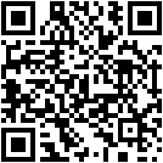

O Survival Station coloca primeiros socorros, mapas, orientações de rádio e um assistente de IA num pendrive. Conecte em qualquer notebook e ele funciona: sem internet, sem instalar nada, sem cadastro.
Governos na Europa e nas Américas recomendam que cada casa esteja pronta para pelo menos 72 horas por conta própria. Água, comida e lanterna estão em todas as listas. Informação confiável quando a internet e o celular caem, quase nunca.

Aponte a câmera para o código ou digite o endereço. Monte o pendrive num computador Windows com internet (pendrive de 32 a 256 GB). Depois ele roda no Windows, Mac e Linux.
Livre e de código aberto (licença MIT). Compartilhe: copiar um kit pronto para outro pendrive não precisa de internet.
github.com/survivalstation-kit/survival-station
Use por sua conta e risco. O Survival Station reúne recursos gratuitos publicados por outros e resumos de orientações públicas de emergência, sem revisão profissional. É uma ferramenta de consulta e não substitui o socorro, os médicos nem as orientações oficiais, e a IA pode errar. Fornecido "no estado em que se encontra": os autores não se responsabilizam por erros, informações incorretas, mau uso nem pelas respostas. Chame ajuda quando puder (SAMU 192, Bombeiros 193, Defesa Civil 199), siga as autoridades e use rádios só como a lei permite. Alertas da Defesa Civil: envie seu CEP por SMS para 40199.